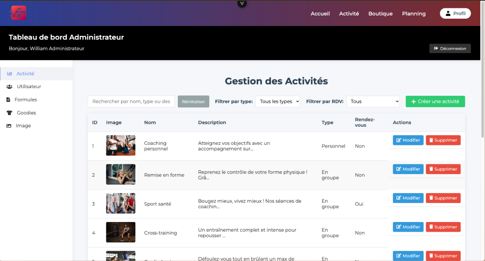
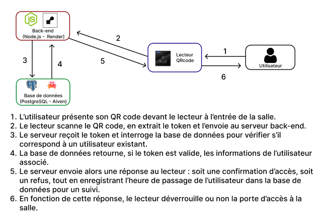

Thème style année 2000, merci de ne pas prendre le style du site au sérieux
Mon portfolio de stage
Alexandre VILLANI

Bienvenue sur mon portfolio ! Ce document retrace mon stage de deuxième année de BUT Informatique, une immersion professionnelle riche en apprentissages. Vous y découvrirez non seulement le projet concret sur lequel j'ai travaillé, mais aussi les coulisses du projet. Ce stage n'a pas été sans défis. Il m'a poussé à sortir de ma zone de confort et à trouver des solutions face à des difficultés inattendues. Ce portfolio témoigne donc de la manière dont j'ai consolidé mes acquis, mais surtout de ma capacité à m'adapter et à persévérer.
À propos / Présentation de l'entreprise
JLConcept, spécialiste de la maintenance informatique à Ronchamp, accompagne depuis plus de 15 ans les entreprises, professions libérales et collectivités. Nous bâtissons une relation de confiance durable avec nos clients grâce à des services flexibles et réactifs : télémaintenance, gestion de parc informatique et contrats de maintenance personnalisés.
Mon tuteur de stage
Durant mon stage chez JLConcept, j'ai été supervisé par M. Jean-Luc Cordier, le gérant de l'entreprise. Bien qu'il ne soit pas issu d'un parcours de développeur, son expérience en gestion d'entreprise et en mainteance informatique a représenté une véritable valeur ajoutée. Cette rencontre m'a permis de comprendre les enjeux qui vont au-delà du code : la relation client, la stratégie commerciale et l'importance de lier chaque solution technique aux objectifs concrets de l'entreprise.
Mission
Dans le cadre de mon stage au sein de l’entreprise JLConcept, j’ai été chargé de
concevoir et développer entièrement le site web d’une salle de sport pour l’un de leurs clients.
Dans un premier temps, le site devait permettre à tout visiteur de découvrir la salle, ses
activités sportives, les formules d’abonnement disponibles, une
boutique en ligne présentant les vêtements proposés par la salle, ainsi qu’un
planning des cours accessibles en consultation.
La seconde partie du projet portait sur la gestion des clients. Chaque utilisateur peut
créer un compte depuis lequel il peut :
- Consulter les différentes formules d’abonnement et s’y abonner,
- Réserver des créneaux pour les cours,
- Obtenir un QR code unique qui lui permet d’accéder à la salle via un système de contrôle d’accès.
- La gestion complète des abonnements, des cours, des activités sportives et des utilisateurs,
- Créer, modifier ou supprimer ces éléments via une interface d’administration dédiée.
- Chaque utilisateur connecté au site peut générer son QR code unique,
- Le QR code est stocké dans la base de données.
- Le lecteur de QR code envoie des appels à l'API lorsqu’un QR code lui est présenté pour identifier l'utilisateur et le laisser entrer.
Savoir & savoir-faire
Compétence 1 - Réaliser un développement d’application
Afficher / Masquer le détail
Pour ce projet, j’ai mis en place une architecture web en utilisant différentes technologies et services.
Le front-end du site a été développé avec Vue.js, puis déployé sur Render.
Le back-end, lui, est une API construite avec Node.js,
également hébergée sur Render.
J’ai choisi Vue.js et Node.js pour leur polyvalence et leur richesse en bibliothèques : par exemple, l’intégration d’un calendrier interactif sur le front et l’envoi d’e-mails automatiques avec Nodemailer côté back.
De plus, je connaissais déjà Vue.js et Node.js grâce aux cours suivis à l’IUT, ce qui m’a permis de gagner du temps et de travailler plus efficacement.
Le front communique avec le back via des appels API HTTP,
principalement pour envoyer ou récupérer des données.
Les données sont stockées dans une base PostgreSQL, que j’ai hébergée sur Aiven.
Le back-end interagit avec cette base de données en exécutant des requêtes SQL.
Pour rendre le site accessible facilement, un nom de domaine chez OVH était déjà en place.
J’ai ensuite configuré les DNS pour qu’il pointe vers le front-end hébergé sur Render.
Ainsi, lorsqu’un utilisateur tape l’URL du site, il accède directement à l’interface Vue.
Enfin, j’ai utilisé GitHub pour versionner mon code tout au long du projet, ce qui m’a permis de suivre les modifications
et de garder une trace claire de l’évolution du développement. (voir Figure 1)
Afin de déployer le site web après chaque mise à jour et de vérifier qu'il n'y ait aucun problème entre le code local et celui en production, j'ai décidé d'utiliser Render.com. En effet, ce service étant gratuit et simple d'utilisation, il me semblait être un choix évident. Il suffit de configurer le front-end et le back-end sur Render, puis de les relier à mon GitHub. Ainsi, après chaque push, Render déploie automatiquement le site web. Même pour relier le nom de domaine, il suffit de suivre les instructions fournies par Render, ce qui rend le processus très fluide à mettre en place.
Architecture du back-end
Pour ce projet, l’architecture mise en place repose sur deux parties indépendantes : un front-end développé avec Vue.js et un back-end en Node.js servant d’API. Contrairement aux architectures monolithiques où tout est regroupé dans une seule application, ici le front et le back sont bien séparés, chacun déployé sur Render. Le front-end interagit avec l’API grâce à des requêtes HTTP envoyées via Axios. L’accès au site passe par un nom de domaine hébergé sur OVH, configuré pour pointer vers l’application front-end déployée sur Render. Côté back-end, l’organisation du code suit une structure claire et modulaire :
- Routes : les routes définissent les points d’entrée de l’API. Elles reçoivent les requêtes HTTP et les redirigent vers les contrôleurs associés.
- Contrôleurs : chaque contrôleur est responsable du traitement de la requête reçue. Il fait le lien entre la route et la logique métier.
- Services : les services contiennent la logique métier principale. Ils sont chargés de faire les traitements nécessaires, comme l'exécution de requêtes SQL vers la base de données PostgreSQL (hébergée sur Aiven) ou l’envoi d’e-mails (par exemple, pour les demandes à l’administrateur).
Comme le site avait vocation à évoluer — c’est-à-dire que les activités sportives, les abonnements, les cours disponibles ainsi que les articles de sport en vente étaient amenés à changer au fil du temps — il était nécessaire de mettre en place une interface d’administration. Une page dédiée aux administrateurs a donc été développée afin de permettre la gestion complète de ces différents éléments (voir Figure 4).

Pour construire cette page, j'ai utilisé le framework Vuex pour gérer l'état global de l'application,
ainsi que des composants Vue.js pour afficher dynamiquement les différentes données.
J'ai également mis en place des requêtes HTTP pour communiquer avec le back-end et récupérer les données nécessaires,
que j'avais déjà définies à l’aide de la documentation Swagger.
Grâce à cela, l’administrateur peut facilement ajouter, modifier ou supprimer des activités sportives,
des abonnements, des cours et des articles de sport en vente.
Pour mieux illustrer les fonctionnalités de la page admin, voici un exemple :
sur la Figure 4, on peut voir la liste des activités sportives disponibles.
Chaque activité est affichée avec son nom, sa description, son image, son type (cours individuel ou en groupe),
et une indication sur la nécessité d’un rendez-vous.
Si l’administrateur souhaite modifier une activité, il lui suffit de cliquer sur le bouton "Modifier" à droite de celle-ci.
Il peut alors mettre à jour les informations correspondantes.
Depuis le front-end, j’envoie les données de l’activité via un formulaire (Figure 5),
transmis au back-end par une requête HTTP PATCH (plutôt que PUT, car l’administrateur peut ne modifier qu’une partie des champs).
Ensuite, le back-end traite la requête et met à jour l’activité dans la base de données (Figure 6).
Le front reçoit une confirmation et redirige automatiquement l’administrateur vers la page de gestion des activités sportives.
Compétence 2 - Optimiser des applications
Afficher / Masquer le détail
L'une des premières chôses qui était vraiment importante de vérifier avant de publier le site était la sécurité du site web.
En effet, le site étant destiné à un usage public, il était primordial de s'assurer qu'il n'y ait pas de failles de sécurité.
Comme le site permet aux utilisateurs de créer un compte, de s'abonner à des formules et de réserver des cours,
il était essentiel de protéger les données personnelles et de garantir que seuls les utilisateurs autorisés puissent accéder à certaines fonctionnalités.
Pour cela, j'ai mis en place plusieurs mesures de sécurité :
- Utilisation de HTTPS pour chiffrer les communications entre le client et le serveur,
- Implémentation d'une authentification sécurisée avec des sessions tokens,
- Validation des entrées utilisateur pour éviter les injections SQL et les attaques XSS (Cross-Site Scripting),
Gestion des erreurs et des exceptions
L’un des premiers problèmes rencontrés concernait la gestion des abonnements. En tant qu’étudiant en deuxième année, je n’étais pas en mesure de mettre en place un véritable système de paiement en ligne sécurisé, ce qui posait un problème pour permettre aux clients de souscrire à un abonnement via le site. Pour contourner cette limite, j’ai proposé une solution alternative au gérant de la salle de sport, qui a été validée. L’idée était de permettre aux clients connectés au site de faire une demande de ticket d’abonnement. Lorsqu’un utilisateur souhaite s’abonner, il peut choisir une formule depuis l’interface, puis envoyer une demande via un formulaire. Pour réaliser cela, j'ai utilisé nodemailer pour envoyer un e-mail à l'administrateur de la salle de sport, Concrètement, le front-end envoie une requête au back-end contenant :
- l’ID de la formule d’abonnement sélectionnée,
- l’ID de l’utilisateur concerné,
- un message optionnel saisi par le client (ex. : précision, remarque).
Le back-end traite ensuite cette demande, récupère l’adresse e-mail de l’administrateur depuis la base de données, puis lui envoie un mail automatique contenant les informations de la demande (Figure 7 et 8). L’administrateur peut alors répondre au client par mail ou directement lors de sa venue pour finaliser l’inscription et le paiement en salle.
Une autre problème était la gestion du QRcode pour l’accès à la salle.
En effet, le gérant de la salle souhaitait que chaque client puisse accéder à la salle de sport de manière autonome,
sans avoir besoin de passer par un employé pour ouvrir la porte. Pour cela, j’ai mis en place un système de QR code unique
pour chaque utilisateur connecté au site. Lorsqu’un utilisateur à un abonnement, un QR code lui est automatiquement généré.
Le problème étant que je n’avais pas accès à un système de contrôle d’accès physique pour tester le fonctionnement du QR code,
car le gérant de la salle a eu des problèmes pour l'installer. Mais j'ai tout de même pu implémenter la génération du QR code
et sa sauvegarde dans la base de données. J'ai utilisé la bibliothèque qrcode de Node.js pour générer le QR code en format image,
puis l'ai converti en base64 pour l'enregistrer dans la base de données. Ainsi, lorsque l'utilisateur se connecte à son compte,
il peut télécharger son QR code depuis son espace personnel. Il peut également le visualiser directement sur le site.
Pour tester j'ai quand même décider d'implémenter une "vérification" du QR code. Il suffisait juste de scanner le QR code avec un téléphone
et de rentrer le token qu'il affiche dans un champ de saisie sur le site.
Si le token correspond à celui de l'utilisateur, alors l'accès est autorisé.

Compétence 5 - Conduire un projet
Afficher / Masquer le détail
Même si je travaillais seul sur le développement du projet,
j’étais en relation constante avec le gérant de la salle de sport ainsi qu’avec mon tuteur de stage chez JLConcept.
J’ai dû comprendre les besoins métier du client, lui proposer des solutions adaptées à ses contraintes
(par exemple : absence de système de paiement en ligne, besoin d’un accès autonome à la salle via QR code),
puis recueillir ses retours régulièrement afin d’adapter et d’ajuster mon travail.
Cette expérience m’a permis de développer ma capacité à communiquer efficacement avec des interlocuteurs non techniques,
à analyser leurs demandes, puis à les traduire en fonctionnalités concrètes. J’ai également appris à gérer mes priorités,
afin de livrer une première version fonctionnelle dans les délais, puis d’y intégrer progressivement de nouvelles fonctionnalités.
Cependant, cette collaboration n’a pas toujours été simple.
En effet, communiquer avec un client dans un langage non technique peut s’avérer complexe :
certains termes ou notions qui me paraissent évidents en tant que développeur ne le sont pas forcément pour lui.
Cela a parfois rendu les discussions plus difficiles, notamment lorsqu’il s’agissait d’expliquer pourquoi certaines fonctionnalités
prenaient plus de temps à développer, ou lorsqu’il fallait proposer des alternatives techniques à ses demandes.
Cette situation m’a poussé à m’adapter, à reformuler mes explications de manière plus pédagogique, et à m’assurer que chaque échange
aboutisse à une compréhension partagée des besoins et des solutions.